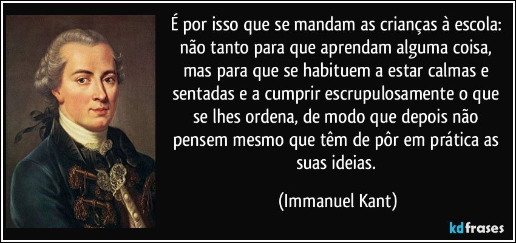
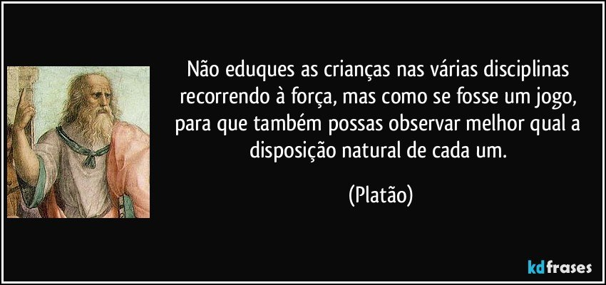

- 
- 
Ações que Transformam o Mundo
Instituído pela Portaria MEC nº 357/2022, o programa tem por objetivo precípuo elevar a qualidade da educação infantil e potencializar o desenvolvimento integral das crianças de 0 (zero) a 5 (cinco) anos de idade.
Objetivo é: "Educação na primeira infância".
Nos países onde a educação é esquecida, desprezada e até mesmo maquiada, as pessoas a todo o momento tentam levar vantagem, são facilmente corrompidas entre outras atitudes questionáveis, que ocorridas coletivamente compromete o crescimento político-econômico-administrativo do país.